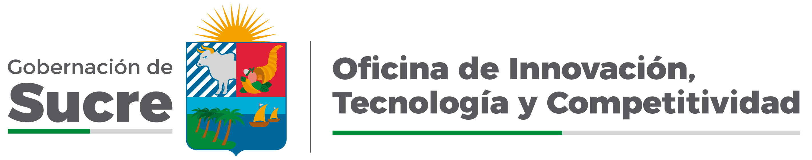

Portal institucional del Centro de Innovación y ProductividadEl CIP Sucre acompaña a empresas, emprendedores, asociaciones y entidades del departamento en procesos de transformación digital, mejora de procesos y estructuración de proyectos, con asesoría técnica y laboratorios disponibles para prototipar y validar soluciones.
El Centro de Innovación y Productividad hace parte de la Oficina de Innovación, Tecnología y Competitividad de la Gobernación de Sucre. Nace con el objetivo de conectar conocimiento, tecnología y sector productivo, y acompañar a empresas, emprendedores y asociaciones del departamento en procesos reales de mejora, adopción tecnológica y estructuración de proyectos.
Liderar la transformación económica y social en el departamento de Sucre mediante el fortalecimiento de la productividad y sostenibilidad de los sectores priorizados, a través de servicios de asesoría, consultoría y capacitación, articulando los esfuerzos del sector público, privado, académico y de la sociedad civil, para generar cambios sistémicos y estructurales que impulsen un desarrollo económico, social e innovador sostenible en el territorio.
Consultores y extensionistas trabajan sobre el reto puntual de cada empresa.
Impresión 3D, corte láser, router CNC y herramientas digitales para prototipar antes de invertir en escala.
Conexión con SENA, cámaras de comercio, universidades y fuentes de cofinanciación como el SGR y Minciencias.
El CIP asesora y, además, pone a disposición espacios y equipos para que empresas y emprendedores prototipen, creen y validen sus soluciones antes de escalar.
Vigilancia de mercado, tendencias y análisis de competencia para identificar oportunidades reales de negocio.
Mejora de procesos, digitalización e innovación aplicada dentro de la operación diaria de la empresa.
Formulación técnica de proyectos y acompañamiento para acceder a convocatorias y cofinanciación.
Asistencia técnica personalizada en sitio, bajo el enfoque de aprender haciendo.
Espacio de trabajo para consultores, emprendedores y equipos que necesitan avanzar sus proyectos.
Espacio para generar ideas, definir modelos de negocio y trabajar con metodologías como Design Thinking.
Acompañamiento para llevar procesos comerciales, de ventas e inventario a herramientas digitales.
Impresión 3D, escáner 3D y diseño asistido para construir prototipos antes de invertir en producción.
Router CNC, cortadora láser y plotters para elaborar piezas físicas y series cortas.
Espacio y herramientas para trabajar mejora continua, Lean y Kaizen aplicados a la operación.
Estos son los espacios físicos del CIP Sucre, disponibles para el trabajo diario de empresas y emprendedores del departamento.
Puestos de trabajo compartido
Negocios y herramientas digitales
Ideación y modelos de negocio
Mejora continua y procesos
Impresión y escaneo 3D
Router CNC y corte láser
Capacitaciones y encuentros
Para conocer o reservar un espacio, use la Agenda o escriba al correo institucional del CIP en la sección de contacto.
Así es el recorrido de una empresa o emprendedor que se acerca al CIP Sucre.
Nos cuenta quién es y qué necesita.
Revisamos la situación actual y el reto puntual.
Identificamos qué línea o laboratorio aplica.
Le presentamos el acompañamiento sugerido.
Se define el alcance y las condiciones.
Se desarrolla la asesoría, el laboratorio o el proyecto.
Revisamos si lo trabajado se está aplicando.
Registre su empresa, emprendimiento o asociación para que la Oficina de Innovación, Tecnología y Competitividad cuente con su información al momento de convocatorias, servicios y oportunidades de innovación y productividad del departamento.
Inscribirme ahoraEl registro se hace en el formulario oficial de la Oficina de Innovación, Tecnología y Competitividad.
Ir al formulario de registroEscanee el código para registrarse desde el celular.
